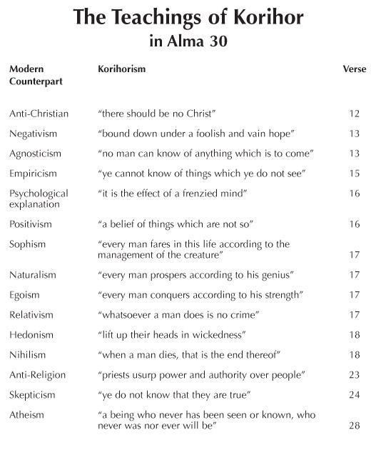

As mentioned in our discussion of Alma 29, there appears to have been a special recognition of a great season of peace at this time among the Nephites. Before King Mosiah died, he had reigned for thirty-three years after the time of King Benjamin’s speech. Now in Alma 30, it was the sixteenth and then seventeenth years of the reign of the judges, totaling forty-nine and fifty years since King Benjamin’s speech. Dates are often given to us in the Book of Mormon for some kind of meaning, and thus it is possible that this moment may have been recognized as a type of jubilee season, although we cannot be sure what that observance or celebration in Zarahemla might have looked like.
It is even unclear how the Jubilee might have been observed in ancient Israel under the law found in Leviticus 25. Jonathan Burnside, a professor of law at the University of Bristol, discusses this question in his superb book, Law, God, and Society (Oxford University Press, 2011), chapter 6. On page 205, he surmises that in the Jubilee, there might have been one full year sabbatical rest in the forty-ninth year (the completion of the seventh sabbatical), and then in the fiftieth year, as it would have been too difficult to keep the crops going and provide enough food to live on, the Jubilee event could have occurred in the opening months of the fiftieth year. According to Burnside’s analysis, it was only in the commencement of the fiftieth year that the Jubilee events took place to take care of reconfiguring the economy, such as liberating the slaves, forgiving debts, allowing original owners to redeem their lands, and moving people around as needed to have their blessings and rights protected under the jubilee laws. Several factors make this festival season a plausible context in these chapters.
First, in Alma 29:1, Alma declared, “O that I were an angel, that I could have the wish of mine heart, that I might go forth and speak with the trump of God.” The word trumpet (Exodus 19:13) or ram’s horn (Joshua 6:5) in Hebrew is yôbhēl. It is also the word for the Jubilee (in Leviticus 25:10–15, the chapter in which the Jubilee laws are given). It was the time of the trumpets. If we read Alma 29, particularly thinking of the emotions of people who may have been celebrating the Jubilee, there are some very interesting ways to appreciate what Alma was saying.
Second, Alma ended the forty-ninth year with great success and joy. A difficult war had been won. New converts had been protected. His four friends (the Sons of Mosiah) had returned from their missions and were working closely with him. He even said that his soul was filled with joy: “Yea, my joy is full,” not only about what he had done, but also the success of his brethren, who had brought the Ammonites up to the Land of Jershon.
He was optimistic. The word joy appears seven times at the end of Alma 29. And indeed, Professor Burnside suggests that “the specific purpose of the jubilee law [was] to rejoice in the difference between being a slave of Pharaoh and a slave of Israel’s God (p. 211).
Third, regarding any concrete evidence of the actual observance of the Jubilee, Professor Burnside regrets that there is very little historical evidence that it was actually honored among the ancients, although its laws certainly set forth social and spiritual ideals that the people did strive to achieve. And while there is no archaeological evidence for the celebration of the Jubilee in ancient Israel, this occasion in the Book of Mormon may provide one such piece of circumstantial evidence. Particularly, the Nephites under Alma had a season of peace in “all the sixteenth year” and on into “the commencement of the seventeenth year” (30:4–5), as Burnside has surmised was the way the Jubilee was observed.
Korihor was an important character with an interesting, although tragic, story. Everything we hear about him is found throughout all of chapter 30, which stands at the very center of the book of Alma. His case set important precedents legally, doctrinally, ecclesiastically, and politically. Alma, having been not only the Chief Judge but also the High Priest, likely took a special interest in this important case for many reasons.
But first, what were Korihor’s origins? Korihor “came into the Land of Zarahemla” (30:6), so he was apparently not a local. But he was extremely well aware of what was going on in Nephite culture and politics, so he was not very far removed the issues of the day there.
For instance, the city of Ammonihah had been destroyed in the fourteenth year of the reign of judges, only three years earlier. When Korihor accused the Nephites of teaching that people are “guilty and fallen, because of the transgression of a parent [namely Adam]” (30:25), he was possibly aware of what Alma, Amulek, and Zeezrom had debated in this regard in Ammonihah. A similar issue had also been raised by Nehor and also by Zeezrom in Alma 1:4; 11:35–37 (that people need not fear, for they had been redeemed and will all receive eternal life). Korihor’s argument here would have appealed to any remaining pockets of followers of Nehor in the land of Zarahemla. And he apparently knew the law in Deuteronomy 24:16, which he seems to paraphrase here (that children are not to “be put to death for the fathers: every man shall be put to death for his own sin”). So, Korihor was not a clueless newcomer to populations in the cities Zarahemla, Jershon, and Gideon.
Those in Ammonihah had been studying and working to undo the Nephite government in the city of Zarahemla (Alma 8:17), and Korihor appears to continue that campaign, accusing the Nephite leaders of taking advantage of their position to exploit the people.
While they took no pay (not even one senine, Alma 30:33), they were likely entitled to eat some of the sacrifices made at the temple. Interestingly, Korihor accuses them of “glutting on the labors of the people” (30:31). The word glut means to over-eat, and if the priests encouraged the people to bring more sacrifices, it meant that they ate better. So, it is easy to see how Korihor might have wanted to twist this idea in order to capitalize on that situation. Korihor may even have known enough to have quoted from the record of Zeniff here, which states that the Lamanites wanted to bring the Nephites “into bondage that they might glut themselves with the labors of our hands” (Mosiah 9:12; I thank Elliott Jolley for drawing this textual connection to my attention). And since the record of Zeniff was brought by Limhi and Gideon when they came to the land of Zarahemla, the people in Gideon might very well have recognized Korihor’s subtle implication that Alma and the Nephite priests were no better than the Lamanite oppressors of their grandparents in the land of Nephi.
Most of all, Korihor was identified as being “anti-Christ” (30:6). He denied that people could “know that there shall be a Christ . . . also that he shall be slain for the sins of the world” (30:26). Challenging the roles of Christ as the Son of God, redeemer, and judge of individuals were among the main issues that had been raised in Ammonihah, especially by Zeezrom (Alma 9:28; 11:42–44; 14:26; 15:6–10). So, on this key issue of debate, Korihor was also very well informed and shrewd.
Interestingly, the episode of Korihor is set entirely in a legal context, and from a legal perspective the case of Korihor is marvelously complicated, specific, and detailed. Crucial for understanding the underlying legal issue in the case of Korhior is the opening affirmation in this chapter that “there was no law against a man’s belief” (30:7). But if a person did some culpable action—specifically “[1] if he murdered he was punished unto death; and [2] if he robbed he was also punished; and [3] if he stole he was also punished; and [4] if he committed adultery he was also punished; yea, [5] for all this wickedness they were punished” (30:10). This statement actually derives precisely from King Benjamin’s public law expressed in Mosiah 2:13, which lists exactly the same crimes—[1] murder, [2] plunder [robbery], [3] stealing, [4] adultery, and [5] committing any manner of wickedness—and in the same order. This cannot be accidental, especially if the Nephites were at that very time celebrating the fiftieth anniversary of Benjamin’s covenantal giving of that law.
But now, since the decree of Mosiah had provided that a person would be “punished according to the crime which he has committed, according to the law which has been given” (Mosiah 29:15), and since there had been no law given allowing people to be punished for their beliefs but only for “for the crimes which he had done” (30:11), the legal gap that remained open under the law of Mosiah was about speech. Could a person be punished for speech alone? Was speaking an action, which under some circumstances could still be punished—as in the case of blasphemy, or inciting rebellion, or leading people into apostasy—or was all such speaking protected as a mere expression of one’s belief? This was an open legal issue when Korihor came into Zarahemla. But his complicated case, involving speech-acts in Zarahemla, Jershon, Gideon, and heard before judges in Gideon and then in Zarahemla, would make it clear, by divine judgment, that some expressions of belief and accusations went beyond the new protective rubric that a person could not be punished for their beliefs. Keeping one’s beliefs private was always a safe choice, and discussing one’s questions was always an option, and even being critical of how things were being handled could have been acceptable. But when Korihor “went on to blaspheme” (30:30), to “revile against the priests and teachers” (30:31), and to make false accusations (30:32–35), he was effectively found, in this case of first impression, to have gone beyond the protected purview of mere speech, even under the stated law (see Exodus 22:28; Leviticus 24:11; Deuteronomy 5:11). It makes sense that not all speech is protectable in all circumstances. Even today, while we believe in free speech and the First Amendment says you are free to speak, a person cannot falsely yell “fire” in a crowded theater. There are certain speech acts that even our modern law will hold as action.
Although the full legal analysis of this fascinating case goes far beyond the purposes of this installment of notes and comments, it can be said without further elaboration that legal technicalities abound throughout the account found in Alma 30. For many who dig deeply into this material, the amazing fact that all of this is legally consistent with ancient Israelite jurisprudence and judicial process is a great testimony that whoever wrote this account was a sophisticated expert in ancient laws generally and was also personally familiar with the fine points of Nephite legal practice. Alma himself would seem to be the only one who would qualify as the author of this marvelously detailed account. My chapter analyzing this case, in my book cited below and used throughout these notes, discusses technical legal matters such as: expulsion (280), criminal arrest (281), courts, multiple jurisdictions, and venue (282–84), reviling and blasphemy (284), giving notice and warning (285), the problems of a single accuser (286), the requirement of diligent investigation, evidences, and witnesses (286), submission to an ordeal (288), collective responsibility and the “better one than many” rule (288), cursing of an opponent with speechlessness, talionic justice, imposing the inability to speak as matching the crime of speaking unlawfully (289–293), granting an opportunity to confess, taking that confession in writing, and the inadequacy of an incomplete confession (293–295), banishment as an alternative to execution, proclaiming and heralding the result of a court proceeding, giving public warning, and punishment by an act of God (295–298). All of these legal topics are woven smoothly into the narrative fabric that stands behind this legal proceeding and the precedent that was established by this seminal case.
Of great intellectual interest are the teachings, doctrines, rhetoric, and logic that stand behind the words and argument of Korihor. Rarely has such a case presented such a thorough précis or summary of the full sweep of secular philosophies, past and present.
Many of Korihor’s points were not original to him. They can be found in biblical examples, in ancient Greek philosophy, and the history of academic inquiry dating back into Lehi’s and Alma’s day. Some of Korihor’s arguments resonate with other arguments in the history of philosophy, including Enlightenment rationalism, Hegelian and Marxist class conflicts and dialectical materialism, Existential nihilism, and relativistic and deterministic philosophical strands that would not emerge or flourish until later in the nineteenth century or on into the twentieth century. As the accompanying chart shows (Figure 1), Korihor’s brief one-liners project the headlines of numerous ideologies. No doubt, Korihor had developed his bullet points much further and had much more to say on each of his assertions. Each “Korihorism” is aligned in this chart with a possible modern or standard philosophical counterpart. Indeed, a strong syllabus for any modern course in the history of philosophy could take Korihor as its guide. He misses very few of the standard sophistic, skeptical, or cynical beats.

Figure 1 John W. Welch and Greg Welch, "The Teachings of Korihor in Alma 30," in Charting the Book of Mormon, chart 78.
This chart summarizes the teachings of Korihor mainly in Zarahemla (30:12–18). His teachings there were mainly practical, political, social or secular in nature. His litany is essentially a standard road map to modern secularism.
For example, various schools of thought have followed the axioms of Agnosticism or Empiricism (30:15), “You just cannot know anything you cannot see,” which of course is simply not true. Knowing and seeing are not the same thing. Korihor tosses in psychological arguments to denigrate or dismiss anything that is spiritual. Such arguments jump to the simplistic conclusion that all spirituality “is some kind of mental derangement, the result of a frenzied mind” (30:16).
Logical Positivism, the main philosophy of the mid-twentieth century, accuses people of believing things which are not so (30:16), and you have to have things positively logical in order for them to be believable. However, even the proponents of this view abandoned that school of thought as it was circular or incomplete.
Sophism, or the view that “every man fares in this life according to the management of the creature” can be found right in the Greek Sophists, who were challenged in several of Plato’s dialogues. Sophism insists that God does not influence or have any control over this world, but that we somehow do. “Man is the measure of all things,” as Protagoras famously put it, and Korihor does too (30:17).
Naturalism, Egoism, Humanism, Relativism (whatever you do is no crime, 30:17), and so on, all the way down to Nihilism and Atheism which is Korihor’s final card (30:18). He boldly asserts that “You talk about a being who never has been seen or known, who never was nor ever will be” (30:28), but how can he be so absolutely sure of any of that, either past or present, let alone future? Highly recommended are the wise and sobering articles published in the 1970s and written by two BYU philosophy professors, Chauncey C.
Riddle and C. Terry Warner, listed and linked below. Gratefully these are now readily available and only a click away.
As you read Korihor’s ranting, do not overlook the fact that his philosophical and political arguments shift dramatically in nature and tone when he speaks to the righteous people in the city of Gideon (30:22–28). Another chart could and should be produced to list Korihor’s many further arguments in that location, which become much more theological or ecclesiastical in nature. There he deployed his mental gymnastics to “pervert” or twist “the ways of the Lord,” to deny any promised messiah, to “interrupt” the rejoicings of faithful people, and to speak against “all the prophecies” (30:22). He baldly labeled all traditions, ordinances, and practices as “foolish,” ignorant and oppressive (30:23). He ridiculed the idea of Christ being “slain for the sins of the world” (30:26). He accused the priests of being self-serving, following their dreams, whims, visions, and “pretended mysteries” (30:27–28). As is often the case in critical thought, Korihor’s arguments are mainly negative. He offers little in the way of helpful solutions to existing problems or human needs.
And if that were not already enough, Korihor’s allegations and propositions get even more strident and less coherent when he is transferred from Gideon to the authorities back in Zarahemla (see 30:30–31). In his behalf, we can be sure that Korihor was very bright and that we only get a very brief thumbnail of his multiple lines of debate. He must have been able to discourse on these various arguments at great length. He was very persuasive in the minds of several followers, and he must have been very shrewd. But so were many in the audiences he addressed. The people in Jershon, having just been defended by the generosity of the Nephites, understandably gave him no quarter. And the officials in Gideon wisely realized that this case was above their experience or paygrade.
The Nephites in Zarahemla apparently felt that they could not kick Korihor out of Zarahemla, since the law (after all) said that a person could only be punished for committing an actual crime in violation of some written statute or law. But the people in Jershon had no trouble throwing him out of their new city and land. Why was that the case? The answer may tell us something about the law in the Land of Jershon.
The people of Jershon, the recently converted Lamanites, were certainly more righteous than some of those in the land of Zarahemla, and perhaps they may have had different laws there. Were they bound by the law of Mosiah? Perhaps not. They had their own city, given to them for their inheritance, so they may have been somewhat autonomous, operating under their own local rule. Having come from the land of Nephi where religious speech was only allowed by a royal proclamation (see Alma 23), these Ammonites may well have felt no need to give Korihor an open microphone. At least we know that Korihor had no recourse against them when they kicked him out.
This elaborate judicial report teaches us some interesting things about the justice system in the land of Zarahemla. We learn here about different jurisdictions and the removal or transfer an accused from one venue to another. By its action, the court in Gideon was not trying to delay the trial. Delay was not a feature in most ancient legal systems. There was not a trial and then an appeal. If an appeal was to be made, it was based immediately on some failure of the party to accept the jurisdiction of the court, or for the court to refuse to accept the case, and the latter was what happened here.
The judges in Gideon said, “Let us send him to Zarahemla,” and they were legally able to do that. We see that happening elsewhere. Before the time of the reign of judges, the king and his priests worked closely together on legal problems like the ones created by Korihor.
This is evidenced by the collaboration of Benjamin and the holy prophets who were among his people (Words of Mormon 1:16–18), and also in the case of Noah and his priests working with each other (Mosiah 12–17). With the establishment of a covenant church and at the same time a separate civil administration in Zarahemla, priests were no longer involved in civil and criminal matters, which were instead heard by the judges. This, of course, raised the question of whether Korihor’s case should be considered a church matter or a public matter.
Korihor is well-known as the infamous “Anti-Christ” who preached “against the prophecies ... concerning the coming of Christ” (Alma 30:6). Among other things, Korihor taught that “there should be no Christ” (30:12), and when asked by Alma if he believed in God, he flatly answered in the negative (30:37–38). Because of this, modern readers of the Book of Mormon are accustomed to describing Korihor as an atheist, or someone who denied the existence of God. Others have even argued that Korihor is an anachronistic figure in the Book of Mormon since he espoused teachings that are congruent with Enlightenment philosophies such as Deism and other secular ideologies.
Ancient atheism, however, could and did sometimes take the form of denying that God(s) existed at all, but it might also involve efforts to redefine the nature of God(s) into something radically different from typical beliefs. For example, some atheists might simply deny the operative power of God(s) in the cosmos, or they might consciously rebel against the God(s), or undermine accepted ideas of piety by refusing to worship a given deity in the state religion. In so doing, a philosopher did not necessarily need to deny the existence of God(s) in order to be considered an atheist in the ancient world. Any of these variations may have been the case with Korihor.
Korihor decided that he was going to take his challenge against Alma, the High Priest, all the way to the end—he was going to play this out. If he knew of the case of Sherem, he did not believe that the Sherem phenomenon would repeat itself, that somehow a divine manifestation would intervene to show that he was wrong. On the contrary, he believed that no sign would be given to undermine his right to speak. Indeed, he was even willing to blaspheme and revile, adopting an “I can say anything I want to” type of attitude. To a modern person we say, “Sticks and stones will break my bones, but names will never hurt me.” But for ancient people, words and names could be injurious. For example, they could commit a tort by placing a curse on someone, or on their land, or by desecrating a name.
Such words or incantations were feared as much as actions, and were thought to be able to carry the powers that manifest themselves here in Korihor’s important test case. It got to the point of testing the limits of this new Law of Mosiah about freedom of belief. How far did that law go?
Alma essentially said, “It is better that your one soul should perish, than that you should lead many people astray.” This is the same legal principle was invoked in the slaying of Laban. Alma was not saying, “We are going to kill you so that you will not mislead other people.” God was the one who had been offended by the blasphemy, so leaving the judgment to God and allowing him to curse Korihor with speechlessness made good sense and was perfectly fitting and appropriate.
The cursing of Korihor with speechlessness is interesting. His tongue had been the instrument of offense. There was nothing more fundamental to biblical jurisprudence than the idea that the punishment should suit the crime, that it should be tailored to match the wrong. So, Korihor’s tongue being cursed was a clear sign that what he had been doing with his tongue was inappropriate.
The Nephite court then handed Korihor a written question asking if he had received the divine message. It appears that he had been stunned so that he could not speak. But he wrote, “I know that I am dumb, for I cannot speak.” Could he also not hear? Perhaps, but perhaps he was not deaf, or perhaps his hearing recovered more quickly than his speech.
We do not know. Whatever the case, the Nephite judges wanted Korihor’s confession in writing, and they wrote four questions for him. This all may involve less the matter of his ability to speak than the need for the court to have a legal record, so that anyone who wished to examine Korihor’s confession could do so. When Nehor was put to death, he would not voluntarily confess; it is unclear how much, if anything Nehor “was caused” to confess. So, the Nephites on this occasion were not going to let Korihor go in any way without getting his confession in writing.
There were four questions asked of Korihor, and those four questions are in verse 51. They were: • Art thou convinced of the power of God?
• In whom did ye desire that Alma should show forth his sign?
• Would ye that he should afflict others, to show unto thee a sign?
• Behold, he has showed unto you a sign; and now will ye dispute more?
Korihor’s confession (in 30:52–53) addressed the first question, but the remainder were left largely unanswered. While he admitted that he “always knew that there was a God,” he never took any personal responsibility for the damage he had done or hoped to do.
Perhaps he was not even at this point telling the truth when he vaguely said that he always knew there was “a god.” One wishes to give him the benefit of the doubt, but it seems likely that he was simply saying what he thought the Chief Priest wanted to hear from him. While he admitted, that he taught the words of the devil “because they were pleasing unto the carnal mind, . . . insomuch that I verily believed that they were true,” he never agreed that he would “dispute no more,” as Nephihah, the Chief Judge, had ultimately required and, most of all, needed Korihor to honestly say. From the point-of-view of the law and of the Chief Judge, Korihor’s confession was flawed and inadequate. Alma and the Chief Judge would have been well within their legal rights and official duties to say, “This is not an acceptable confession,” and thus when Korihor asked to have the curse removed, his request was denied, for he had not conformed with their request.
This was not a wholehearted, sincere confession. It was quite half-hearted, and thus it was unacceptable for many reasons. Korihor attempted to rationalize his behavior. He was a great rationalizer. He would not accept responsibility for what he had done even at the very end. Alma essentially responded to Korihor’s request to be freed from the curse by saying something to the effect that, “You know, we do not trust you. If we let you go, there will be more of this, so we will let God deal with you.”
So, what could the judge, in the end, do with him? They likely gave him the option of going into voluntary exile, and leaving Nephite lands. He could not go to any of the other Nephite cities and be a citizen in good standing. However, Antionum was no longer a Nephite land, and that is probably why Korihor went there.
Korihor must have left Zarahemla as a marked pariah. His speech was probably still noticeably changed for the worse. The Nephite official took two additional legal steps to complete the case.
The first was to send out heralds. In ancient biblical law, in an important case where many people might be affected by the outcome, it was incumbent upon the priests, the elders, and the officials of the land to proclaim the outcome. When officials put the titulus on the top of the cross, “ Jesus of Nazareth, King of the Jews,” that was one of these public notices, saying who was being executed and what his offense had been. Giving public notice was an essential part of their legal system. This decision has now established the law of our land.
The second thing that this notice did was to warn people: If anyone in Zarahemla were now to continue to believe and to promulgate the things that Korihor has taught, he could expect to be subjected to the same punishment of banishment as Korihor had received.
Such perfidious action was not protected under the Law of Mosiah.
The public warning heralded in Zarahemla is just as pertinent today in our world as it was in Alma’s day in Zarahemla. As Chauncy Riddle in the September 1977 Ensign has admonished, Korihor’s experience teaches us that having great access to many gospel truths and even having a testimony and being a covenant servant of Christ for a time do not absolutely guarantee salvation; “we are also reminded that the most powerful opposition to the work of the Savior on this earth comes from those who know the truth and then deliberately turn from it and seek to destroy others.” Hence our need—as the Lord himself has pleaded with us—to “watch and pray always, lest ye enter into temptation; for Satan desireth to have you, that he may sift you as wheat” (3 Nephi 18:18).
Korihor left Zarahemla in disgrace, and went to the Zoramites in the city of Antionum.
He knew that he was not welcome in Jershon, and that the people in Gideon were too righteous. He was now a cursed man, and who would want to have someone accursed by God in their city? Perhaps the Zoramites. Korihor may have thought, “They did not believe in this God, maybe they would be more receptive.” Unfortunately for him, the Zoramites did not even have the compassion of wicked Nephites anymore.
Interestingly, Alma and his eight companions went to the City of Antionum shortly after Korihor had been trampled. We do not know whether his death was inadvertent, whether he could not hear them coming, whether he could not yell out for help, whether he was trodden down, or whether the citizens deliberately eliminated him. In ancient societies, the trampling of people who were pariahs was not uncommon. But it does not say. There is no accusation; we are only told that it happened. From Alma’s point-of-view, it was the justice of God finally being carried out.
Process and Procedure